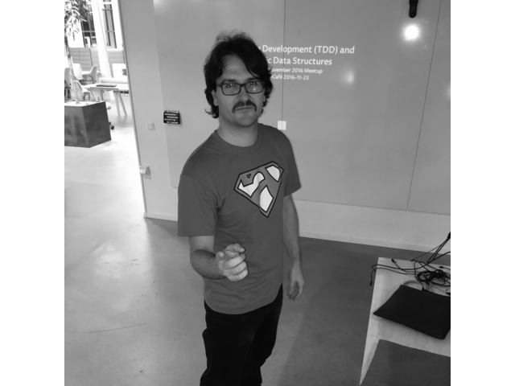

Speakers and Talks

Alexander
Anonymity loves Diversity: The Case of Tor
Tor is an anonymity network consisting of relays run by thousands of volunteers around the world aiming at giving back privacy on the Internet. The network carries around 200 Gbit/s of traffic and helps somewhere between 2,000,000 and 8,000,000 users every day.
In this talk, we will explain why diversity is essential for reaching the desired security and anonymity properties. Both for the Tor Project organization itself, but also for our community, as well as in our daily work with creating privacy-enhancing tools such as the Tor Browser or safeguarding the network itself against attackers.
Alex is a Free software minded hacker from Copenhagen who enjoys working on privacy-enhancing technologies, cryptography, security, and distributed systems. I'm a Core Developer with The Tor Project, where I work on Core Tor.
Lars Brinkhoff
Incompatible Timesharing System - History, Development, Restoration
The Incompatible Timesharing System is a unique operating system created by "hackers" (in the original sense) at MIT's Artificial Intelligence Laboratory. The programmers were allowed to design the system any way they liked, and the result was an open system without any kind of security like passwords or file permissions. Many important applications were developed on ITS: Lisp, Logo, Scheme, Emacs, and Zork, to only mention a few.
The presentation will explain the origin and development of ITS, and how the operating system is being restored to its original glory.
Lars was born and raised in FOSS-north heartland on the west coast of Sweden. He learned programming as a kid during a golden age when there wasn't much else to do with a home computer. Besides having too many side projects, he has contributed code to GNU, Linux, PuTTY, and GitHub.
Carol Chen
A look at Ansible Community in 2020 - from Collections to Contributions to Conferences
To say that 2020 is a year of change is an understatement. In the Ansible project, one of the major changes we've made is the move to Ansible Collections. This affects how Ansible is developed and delivered from 2.10 onwards. At the same time, community events and meetups have shifted from physical spaces to online “virtually” overnight. I have hosted 3 virtual Ansible Contributor Summits this year, the first of which was supposed to happen alongside foss-north back in March.
How has community contributions changed with these new ways of participation? What fell short and what thrived in the different circumstances? We will take a look back at 2020 with contribution data and user metrics, and attempt a glance at what to expect moving forward.
Carol Chen is a Community Architect at Red Hat, supporting several upstream communities such as Ansible and ManageIQ. She has been actively involved in open source communities while working for Jolla and Nokia previously. In addition, she also has experiences in software development/integration in her 12 years in the mobile industry. On a personal note, Carol plays the Timpani in an orchestra in Tampere, Finland, where she now calls home.

Georg
Anonymity loves Diversity: The Case of Tor
Tor is an anonymity network consisting of relays run by thousands of volunteers around the world aiming at giving back privacy on the Internet. The network carries around 200 Gbit/s of traffic and helps somewhere between 2,000,000 and 8,000,000 users every day.
In this talk, we will explain why diversity is essential for reaching the desired security and anonymity properties. Both for the Tor Project organization itself, but also for our community, as well as in our daily work with creating privacy-enhancing tools such as the Tor Browser or safeguarding the network itself against attackers.
Alex is a Free software minded hacker from Copenhagen who enjoys working on privacy-enhancing technologies, cryptography, security, and distributed systems. I'm a Core Developer with The Tor Project, where I work on Core Tor.
Andrew 'bunnie' Huang
Precursor
Precursor is an open hardware development platform for secure, mobile computation and communication. The platform prioritizes security over features, aiming to give us evidenced-based reasons to trust it. For example, it has no CPU chip; instead, it relies on an FPGA, which contains a soft-core CPU that can be built from source. While most users must take as a matter of faith that a hard-wired silicon CPU contains no backdoors, with an FPGA we are at least empowered to verify that the RTL describing the soft-core CPU is correct. This talk will dive into the assortment of unique features in Precursor's implementation that facilitate users to gather evidence of its correct construction.
bunnie is best known for his work hacking the Microsoft Xbox, as well as for his efforts in designing and manufacturing open source hardware, including the chumby (app-playing alarm clock), chibitronics (peel-and-stick electronics for craft), and Novena (DIY laptop). He received his PhD in EE from MIT in 2002. He currently lives in Singapore where he runs a private product design studio, Kosagi, and he actively mentors several startups and students.

Ramón Soto Mathiesen
Domain Driven Design (DDD) with Algebraic Data Types (ADT).
Recently we saw that a widespread open source programming language (C# 9.0) finally added support for record types, one of the two most common kind of Algebraic Data Types (ADT). This had been an ongoing desire from the designers team in order to catch up to other competing programming languages that already have full support for algebraic data types as most functional programming languages but also some multi-paradigm programming languages such as Swift and Rust.
In this talk we will see how the usage of record types as well as sum types, the other of the two most common kind of algebraic data types, can be used to model and design business logic into applications in a more safe, secure and robust manner as it will allow for Making Illegal States Unrepresentable (MISU).
A passionate computer scientist, with flair for functional programming languages and business, that advocates for: correctness, code-quality and high-standards. Ramón seem to have discovered his particular Holy Grail in SAFE Haskell, which he tries to use to make software that can comply with the EU GDPR, by technical means.
Simon Ser
Getting pixels on screen on Linux: introduction to Kernel Mode Setting
Kernel Mode Setting (KMS) is the Linux kernel interface that allows users to configure and control screens connected to the machine. KMS is used by the X.Org server and Wayland compositors but also by other programs that need exclusive access to the screens (such as VR games and media centers). KMS is a very low-level interface (by letting the user configure advanced GPU features) but stays vendor-agnostic (by providing thin generic abstractions for hardware blocks).
This talk will explain what KMS is, how it exposes hardware blocks and how to use it to get an image displayed on screen. The KMS API has evolved over time, as such I'll focus on the latest APIs (e.g. atomic mode-setting) and leave the legacy bits out.
Simon is a FOSS developer at SourceHut. He has been working on Wayland-related projects for a while, especially on the wlroots library and the Sway compositor. He is a Wayland and Weston maintainer. He's also been contributing to the kernel and improving the KMS documentation. Simon also works on other projects unrelated to graphics, such as a number of Go e-mail libraries and other systems programs.